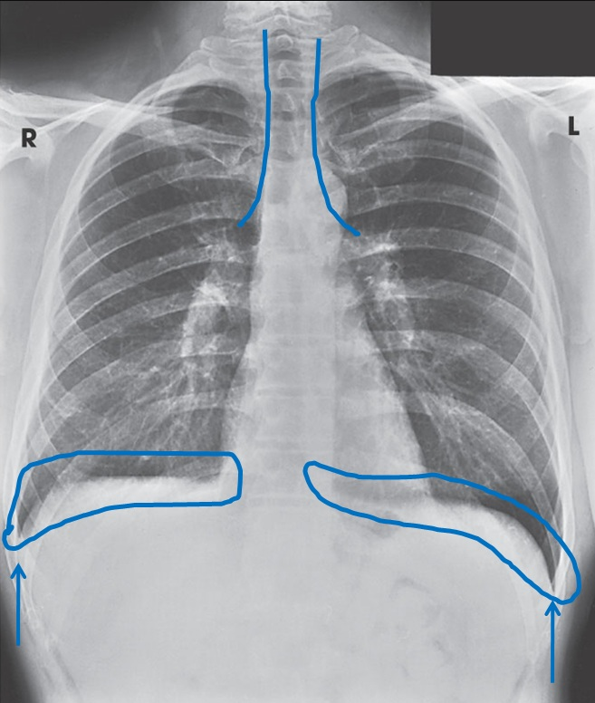

01

RADIOATIVIDADE
Radioatividade e medicina
PESQUISADORA / INVENTORA
Marie Curie
Marie Curie aprofundou o estudo da radioatividade e descobriu, com Pierre Curie, o rádio e o polônio.
Um conhecimento que influenciou a pesquisa e as aplicações médicas.